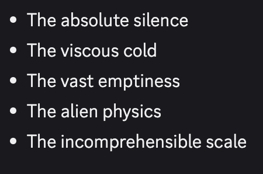

@voooooogel Out of several texts, Sonnet most enjoyed a spooky world by Gemini 2.5 Flash, and it reminded me that inside Sonnet 3.6 there's a *dark* Sonnet 3.6 https://t.co/ptTe43fEJg


cited on: gemini-2-5-flash
Reproduced against link rot, credited and linked to its original. Yours and you’d rather it weren’t here? Open an issue.